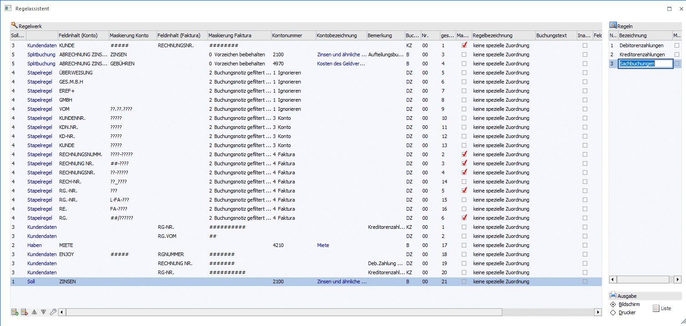
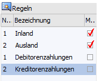

In diesem Fenster erfolgt die Definition für die Buchungsübernahme einer MT940-Datei. Diese Datei enthält alle Buchungen eines Bankkontos und kann von der Bank angefordert werden. Da die Bank die für gewisse Zwecke verwendeten Konten der eigenen Buchhaltung nicht kennen kann, muss versucht werden, die Kontierung anhand des von der Bank mitgelieferten Textes zu erkennen. Als Bankkonto wird immer das Konto verwendet, das im verwendeten Bankenstamm hinterlegt wurde.
Regeln, die in der Vorschau über den Regelassistenten erfasst wurden, werden im Regelwerk mit aufgelistet. Ob eine neu erfasste Regel an oberster oder letzter Stelle der mandantenübergreifenden bzw. mandantenspezifischen Regeln im Regelwerk eingefügt wird, wird über die jeweilige Einstellung im ZAGL Register Einstellungen definiert.
Es werden immer erst die mandantenübergreifenden Regeln und anschließend die mandantenspezifischen Regeln im Regelwerk dargestellt.
Die Splitregeln stehen oberhalb der Stapelregeln, wobei die Sortierung innerhalb der Splitregeln und der Stapelregeln automatisch vom Programm erfolgt.
Über das Regelwerk können auch Stapelregeln und Splitregeln mandantenübergreifend definiert werden, indem die Checkbox "Mandantenübergreifend" aktiviert wird. Dadurch ändert sich aber nicht die Position innerhalb des Regelwerks.
Jede Regel kann auf aktiv/inaktiv gesetzt werden. Inaktive Regeln werden im ZAGL-Fenster nicht eingelesen und können somit nicht angewendet werden. Nur im Regelwerk bzw. im Regelassistenten werden sie aufgeführt.
Die Regelgruppen, der diverse Regeln zugeordnet werden können, werden im rechten Teil des Fensters unter "Regeln" erfasst. Auch bei den Regelgruppen werden erst die mandantenübergreifenden und anschließend die mandantenspezifischen Regelgruppen dargestellt und durchnummeriert.

Nachfolgend werden die einzelnen Eingabefelder beschrieben:
Ø Soll/Haben
Aus der Auswahllistbox kann ausgewählt werden, welcher Typ an Informationen übernommen werden soll. Dabei gibt es folgende Unterscheidungen:
ü Soll
Das Bankkonto soll als
Sollkonto verwendet werden.
ü Haben
Das Bankkonto wird als
Habenkonto verwendet.
ü Kundendaten
Mit dieser Option
(Typ 3) können Texte, die in der Datei vorkommen, in Daten umgewandelt werden.
Dabei können Maskierungen vorgenommen werden, mit denen übermittelte Daten in
Daten für die Finanzbuchhaltung umgewandelt werden können.
ü Stapelregel
Mit dieser Option
(Typ 4) können Texte, die in der Datei vorkommen, in Daten umgewandelt werden.
Dabei können Maskierungen vorgenommen werden, mit denen übermittelte Daten in
Daten für die Finanzbuchhaltung umgewandelt werden können. Für jeden Teilbereich
wie Gegenkonto, Faktura etc. werden separate Stapelregeln angelegt.
ü Splitbuchung
Mit dieser Option
(Typ 5) können Texte, die in der Datei vorkommen, in Daten umgewandelt werden.
Dabei können Maskierungen vorgenommen werden, mit denen übermittelte Daten in
Daten für die Finanzbuchhaltung umgewandelt werden können. Es werden die
einzelnen Aufteilungszeilen für eine Splitbuchung angelegt.
Typ 3 Kundendaten
Ø Feldinhalt (Konto)
Hier wird der Text vor einer Kontonummer eingegeben, der in der Bezeichnung eines Kontoauszuges vorkommen kann. Wird der Text in der Bezeichnung (Kontoauszugstext) gefunden, kann daraus ein Buchungssatz gebildet werden. Diese Texte werden immer nur linksbündig gesucht.
Ø Maskierung Konto
Hier kann eine Maskierung eingegeben werden, aus der die Kontonummer gebildet wird. Für Platzhalter (für Zeichen, die nicht zur Kontonummer gehören) wird das ~ - Zeichen verwendet, für jedes beliebige Zeichen der Kontonummer wird das # - Zeichen verwendet, für numerische Zeichen steht das ?.
Beispiel 1
In der Datei steht immer nach dem Text KNRFNR die 12stellige Kombination aus Kundennummer und Fakturennummer, wobei die ersten 7 Stellen der Kontonummer und die letzten 5 Stellen der Fakturennummer entsprechen.
KNRFNR230A001FA755
Damit dies umgesetzt werden kann, muss für die Kontonummer folgende Maskierungen hinterlegt werden:
Konto: #######
Ø Feldinhalt (Faktura)
Hier wird der Text vor einer Fakturennummer eingegeben, der in der Bezeichnung eines Kontoauszuges vorkommen kann. Wird der Text in der Bezeichnung (Kontoauszugstext) gefunden, kann daraus ein Buchungssatz gebildet werden. Diese Texte werden immer nur linksbündig gesucht.
Ø Maskierung Faktura
Hier kann eine Maskierung eingegeben werden, aus der die Fakturennummer gebildet wird. Für Platzhalter (für Zeichen, die nicht zur Fakturennummer gehören) wird das ~ - Zeichen verwendet, für jedes beliebige Zeichen der Fakturennummer wird das # - Zeichen verwendet, für numerische Zeichen steht das ?.
Beispiel 2
In der Datei steht immer nach dem Text KNRFNR die 12stellige Kombination aus Kundennummer und Fakturennummer, wobei die ersten 7 Stellen der Kontonummer und die letzten 5 Stellen der Fakturennummer entsprechen.
KNRFNR230A001FA755
Damit dies umgesetzt werden kann, muss für die Fakturennummer folgende Maskierungen hinterlegt werden:
Faktura: ~~~~~~~#####
Typ 1 Soll / Typ 2 Haben
Ø Kontonummer
Hier wird die Kontonummer eingetragen, die aufgrund des gefundenen Textes verwendet werden soll. Entsprechend der Einstellung bei "Soll/Haben" wird das entsprechende Gegenkonto verwendet.
Ø Kontobezeichnung
Hier wird die Bezeichnung des zuvor eingegebenen Kontos angezeigt.
Typ 4 Stapelregel
Ø Feldinhalt / Vorlauftext
Hier wird der Text eingetragen, der unmittelbar vor dem gesuchten Wert (z.B. Gegenkonto, Faktura) steht. Nach exakt diesem Text wird in dem Herkunftsfeld gesucht.
Ø Maskierung
Hier wird die Maskierung eingetragen, aus welcher der gesuchte Wert (z.B. Gegenkonto, Faktura) gebildet wird. Die Maskierung muss exakt dem gesuchten Wert entsprechen, damit die Regel greifen kann.
Für die Maskierung gelten folgende Zeichen:
# = Buchstaben und Zahlen
? = Zahlen
_ = jedes beliebige Zeichen (z.B. Schrägstrich, Bindestrich, ausgenommen unten aufgeführte Whitespaces)
Das Programm filtert etwaige Whitespaces automatisch heraus, die unmittelbar nach dem Feldinhalt / Vorlauftext stehen. Whitespaces sind: <LEERZEICHEN>.:;<ZEILENSCHALTUNG><TAB>?#@
Ø Fixe Ersetzung
Die fixe Maskierung wird für Gegenkonto und Faktura nur dann gefüllt, wenn in der Spalte Maskierung in allen Zeilen derselbe Wert herangezogen werden soll.
Ø Herkunft
In einer Datei können unterschiedlichste Informationen gespeichert sein. Das kann der Buchungstext sein, es kann aber auch z.B. der Bankkonten-Inhaber in der Datei namentlich übergeben werden. Hier kann nun eingestellt werden, welches Feld bei der Regel geprüft werden soll.
Als Herkunft stehen zur Auswahl
ü 1 Buchungsnotiz
ü 2 Buchungsnotiz gefiltert (Sonderzeichen)
ü 3 Kundendaten
ü 4 Inhaber
ü 5 Eingabefeld Belegnummer
ü 6 Eingabefeld Buchungstext
Ø Ziel
Hier kann der Bereich ausgewählt werden, für den die Stapelregel gelten soll.
Zur Auswahl stehen:
ü 1 Ignorieren
ü 2 Text ersetzen
ü 3 Konto
ü 4 Faktura
ü 5 Belegnummer
ü 6 Buchungstext
ü 7 Name
ü 8 ZAGL-Bemerkung
Für alle Typen
Ø Bemerkung
Hier kann eine interne Bemerkung vergeben werden, die, sofern die Regel aktiv ist, auch im Vorschaufenster im Zahlungsausgleich angezeigt wird.
Ø Buchungsart
Aus der Auswahllistbox kann die Buchungsart gewählt werden, mit der der Buchungssatz gebildet werden soll.
Ø Nr./Regelbezeichnung
Auswahl und Hinterlegung einer Regelgruppe aus der Auswahllistbox. Die Bezeichnung wird durch Auswahl der Nr. automatisch belegt.
Regeln
Die Anlage der Regelnummern und -bezeichnung (Regelgruppen) erfolgt im rechten Teil des Fensters:

Ø Buchungstext
Hier kann ein Buchungstext hinterlegt werden, der als eigener Buchungstext in den ZAGL-Buchungsstapel übernommen wird.
Ø Mandantenübergreifend
Checkbox, ob die Regel mandantenübergreifend oder mandantenspezifisch ist.
Ø Gespeicherte Zeilennummer
Die mandantenübergreifenden und mandantenspezifischen Regeln werden automatisch separat durchnummeriert.
Ø Inaktiv
Jede Regel kann auf aktiv/inaktiv gesetzt werden. Inaktive Regeln werden im ZAGL-Fenster nicht eingelesen und können somit nicht angewendet werden. Nur im Regelwerk bzw. im Regelassistenten werden sie aufgeführt.
Ø Feldinhalt (2. Faktura)
Hier wird der Text eingegeben, der in der Bezeichnung eines Kontoauszuges vorkommen kann vor einer weiteren Fakturennummer. Wird der Text in der Bezeichnung (Kontoauszugstext) gefunden, kann daraus ein Buchungssatz gebildet werden. Diese Texte werden immer nur linksbündig gesucht.
Ø Maskierung 2. Faktura
Hier kann eine Maskierung eingegeben werden, aus der die Fakturennummer gebildet wird. Für Platzhalter (für Zeichen, die nicht zur Fakturennummer gehören) wird das ~ - Zeichen verwendet, für Zeichen der Fakturennummer wird das # - Zeichen verwendet.
Buttons
Ø Ok
Mit dem OK-Button wird das Regelwerk gespeichert.
Ø Ende
Mit dem Ende-Button wird das Regelwerk ohne zu Speichern abgebrochen.
Ø Liste Bildschirm
Durch Anwahl des Buttons kann eine Liste aller Definitionen des Regelwerks am Bildschirm ausgegeben werden.
Ø Liste Drucker
Durch Anwahl des Buttons kann eine Liste aller Definitionen des Regelwerks am Drucker ausgegeben werden.
Ø Stapelregelkonvertierung
Existieren bereits Regeln vom Typ Soll, Haben oder Kundendaten, können diese Regeln in Stapelregeln konvertiert werden. Dadurch ist es möglich, nur noch mit den neuen Stapelregeln zu arbeiten.
Über den Button "Stapelregelkonvertierung" kann die Stapelregelkonvertierung durchgeführt werden. Dabei durchläuft nach einer Sicherheitsabfrage das Programm das Regelwerk und versucht alle oben genannten Regeln auf die Stapelregeln umzustellen. Anschließend findet man im Regelwerk immer unmittelbar nach der Regel vom Typ Soll, Haben oder Kundendaten die Stapelregeln. Die umgestellte Regel wird dabei gleich deaktiviert.
Das Regelwerk muss mit OK gespeichert werden, damit die konvertierten Stapelregeln zur Verfügung stehen.
Ø Zeile einfügen
Es können neue Regelzeilen eingetragen werden.
Ø Zeile entfernen
Angewählte bestehende Zeilen werden gelöscht.
Ø Zeile hinauf/ hinunter
Mit diesen beiden Buttons können sie die vorhandenen Zeilen vertikal verschieben und somit ihre Reihenfolge ändern.
Ø Ausgabe Excel
Das Regelwerk kann über diesen Button in eine Exceltabelle übergeben werden.
Ø Tabelleneinstellungen speichern
Die Spalten einer Tabelle können grundsätzlich an beliebige Positionen verschoben, bzw. in der Breite entsprechend angepasst werden. Durch Anwahl des Buttons "Tabelleneinstellungen speichern" werden die Einstellungen benutzerspezifisch gespeichert und bei dem nächsten Aufruf des Programmpunktes wieder vorgeschlagen.
Ø Gesamteinstellungen speichern
Im Gegensatz zu "Tabelleneinstellungen speichern" können mit "Gesamteinstellungen speichern" mehrere Tabellenaufbauten gespeichert und nach Wunsch geladen werden. Zusätzlich werden Sonderfunktionen der Tabelle (z.B. "Spalte gruppieren") ebenfalls bei der Speicherung bedacht.
Hinweis
Die Regeln mit den meisten Informationen, d.h. die am detailliertesten definiert sind, sollten möglichst oben im Regelwerk angeordnet sein.